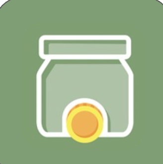
Project Overview
Summary
OnTrack is a gamified productivity and accountability platform designed to help individuals build better habits, achieve personal goals, and improve financial discipline.
The platform combines traditional task management with behavioural psychology principles by introducing accountability mechanisms, financial incentives, and social motivation. Users are encouraged to complete their goals through a "commitment jar" model, where failing to complete tasks results in a financial consequence, while successful completion reinforces positive habits.
The objective was to design a solution that moves beyond simple task tracking and addresses the deeper challenge behind productivity: maintaining motivation and accountability over time.
1. Discover: Understanding the User Problem
Background & Opportunity
In an increasingly digital world, individuals have access to countless productivity tools, yet many continue to struggle with procrastination, maintaining consistent habits, managing competing priorities, and staying accountable to personal goals.
Existing productivity applications primarily focus on task organisation, but fail to address the behavioural challenges preventing users from completing those tasks.
User Research & Insights
"I know what I need to do, but I struggle to actually start."
Users could easily create task lists but struggled with follow-through and completing commitments.
OpportunityShift focus from task creation to completion behaviour.
Users were more likely to complete commitments when faced with social accountability, financial consequences, and visible progress.
OpportunityIntroduce meaningful accountability mechanisms to encourage follow-through.
Traditional productivity tools felt transactional, lacking motivation, achievement and reward.
OpportunityApply gamification principles to create a more engaging experience.
2. Define: Problem Statement
User Problem
Students, entrepreneurs, and young professionals struggle to consistently achieve their goals because existing productivity tools focus on organising tasks rather than addressing motivation and accountability.
How Might We Statement
Target Users
3. Ideate: Exploring Solutions
Solution Principles
Based on research findings, the solution was designed around three principles:
Create external accountability mechanisms to encourage task completion.
Transform productivity into an engaging experience through challenges, rewards, progress tracking, and competition.
Help users build sustainable habits through financial discipline, self-improvement, and goal tracking.
Solution Concept
Introducing the Accountability Jar
The core feature introduces a commitment-based reward system where financial stakes drive behavioural change.
How It Works
Behavioural Shift
Before:
"I should complete this task."
After:
"I have committed to completing this task."
4. Design: User Experience & Prototype
User Journey
The user flow was designed to minimize friction while maximizing engagement and accountability:
Goal Creation
Users define an objective, set a deadline, and assign a commitment amount that feels meaningful.
Daily Planning
AI-powered task recommendations, prioritised schedules, and real-time progress tracking keep users focused.
Accountability
Smart reminders, progress updates, and social accountability notifications encourage consistent completion.
Rewards
Successful users keep their money, build completion streaks, and unlock achievement badges.
Design Prototypes
Onboarding Flow
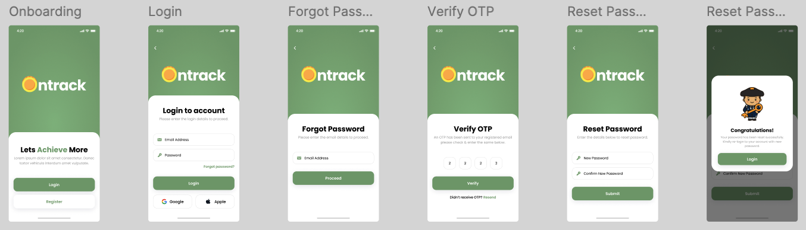
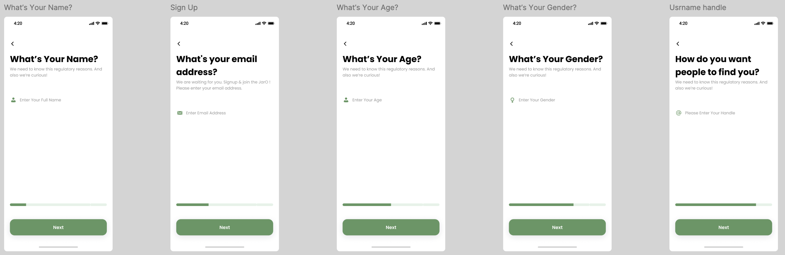
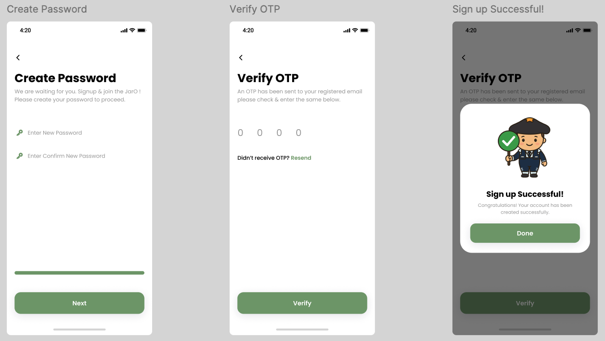
Task List & Dashboard
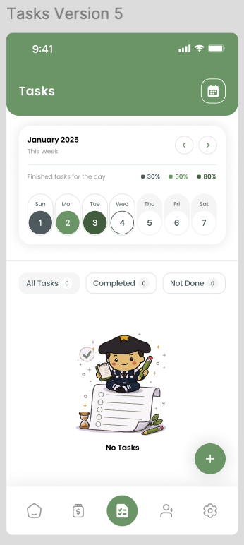
Accountability Jar Flow
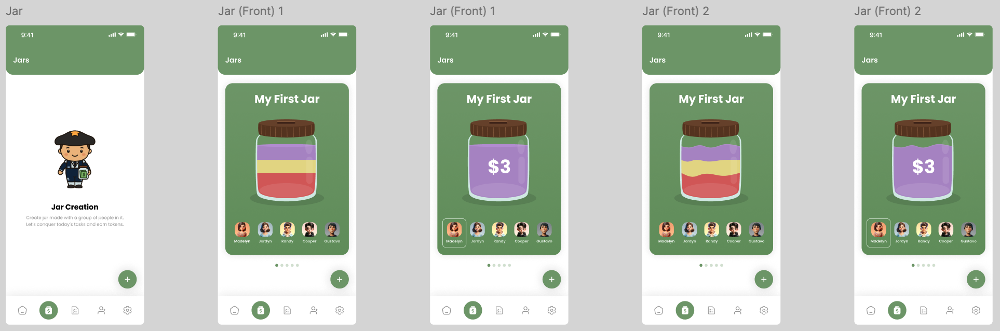
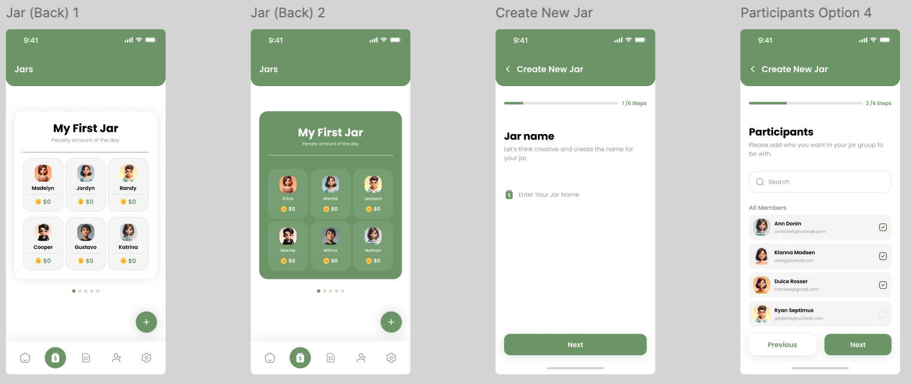
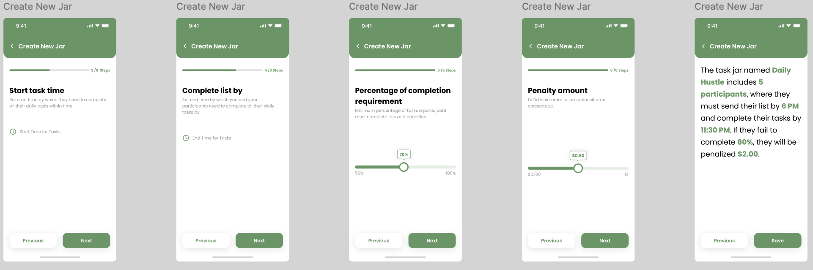
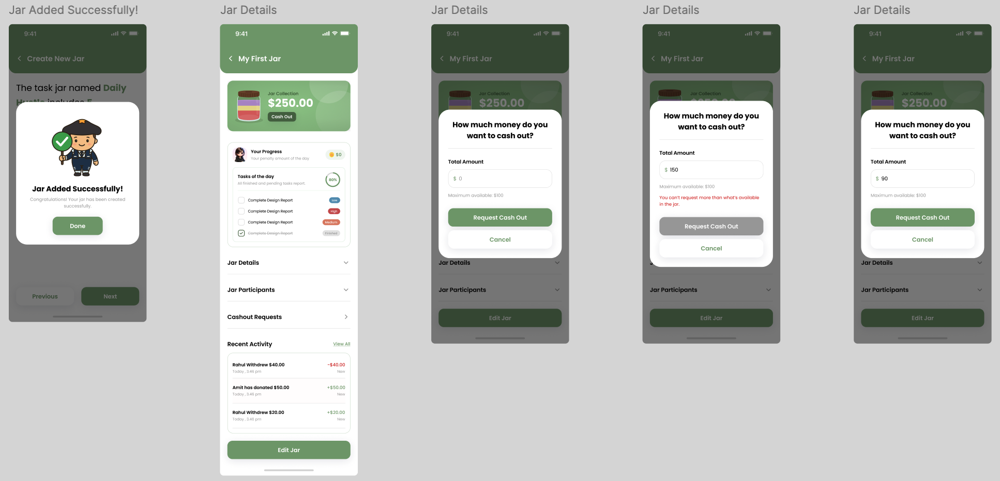
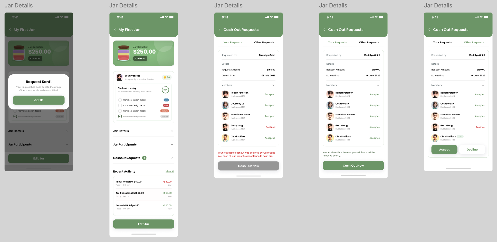
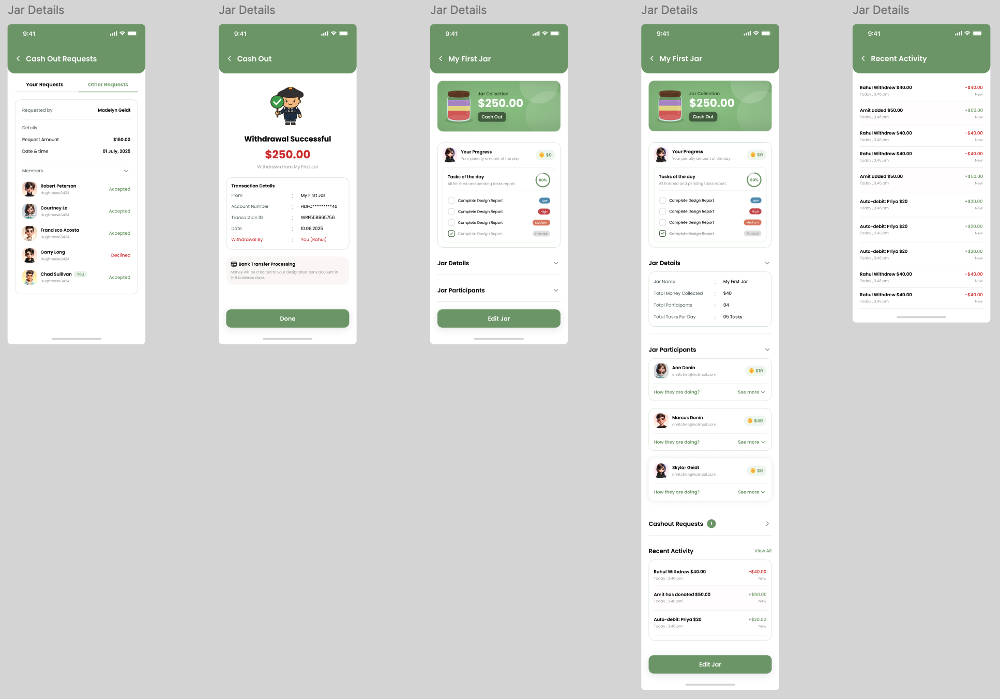
Social Features & Customisation
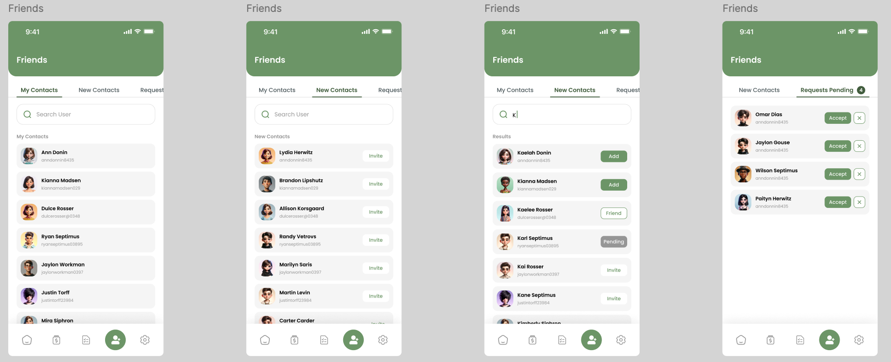
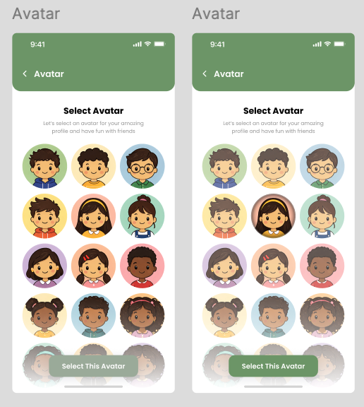
Settings
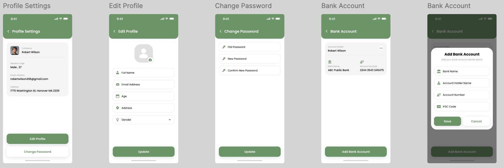
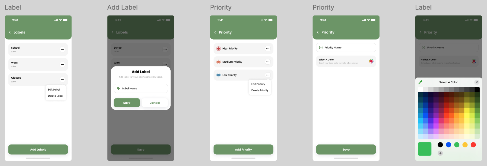
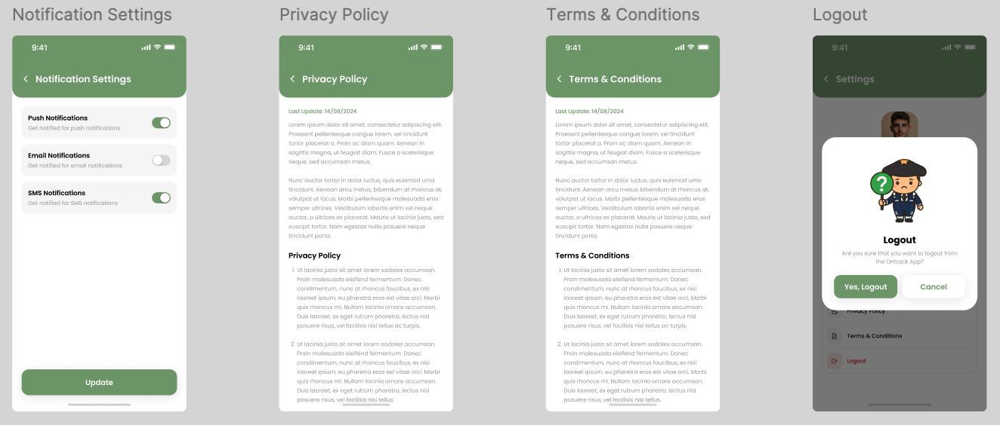
Try the Prototype
Test the live app via TestFlight
Login Credentials
Email: mack01@yopmail.com
Password: Test@1234
5. Validate: Testing & Iteration
Usability Testing
Conducted moderated usability tests with 8 participants (4 students, 4 young professionals) to validate the core accountability concept and workflow intuitiveness.
Testing Objectives:
Key Findings & Iterations:
💬 Finding #1
"The financial penalty feels motivating but could feel too harsh."
Users appreciated the accountability mechanism but expressed concern about high commitment amounts.
✨ Iteration #1
Introduced flexible commitment amounts ($1-$50 range), optional social accountability as an alternative, and positive reinforcement rewards for streaks.
💬 Finding #2
"I'm not sure how to prioritise my tasks effectively."
Users struggled with prioritising multiple tasks and understanding which to complete first.
✨ Iteration #2
Added AI-powered task prioritisation suggestions, visual urgency indicators (red/yellow/green), and "Focus Mode" to highlight top 3 daily tasks.
💬 Finding #3
"I want to see my progress over time, not just today."
Users expressed desire for long-term progress tracking and visual achievement representation.
✨ Iteration #3
Created a progress dashboard with weekly/monthly completion trends, streak counters, and achievement badges to visualise long-term behaviour change.
6. Deployment Strategy
Phase 1: Pilot Deployment
Launch a beta version, gather behavioural data, and measure engagement with university students and young professionals.
Phase 2: Community Growth
Introduce accountability groups for university study groups, entrepreneur communities, and fitness challenges.
Phase 3: Scale
Expand into workplace productivity, corporate wellness programs, and education institutions.
7. Measuring Success
Adoption Metrics
70%
User Activation
Complete first goal
50%
Weekly Retention
Active after 30 days
+30%
Task Completion
Increase completion rate
5
Engagement
Tasks completed/week
Current Status & Next Steps
OnTrack is currently in Phase 1: Pilot Deployment, with a live TestFlight beta available for early users. The focus is on gathering user feedback, validating the accountability jar concept, and iterating based on real-world usage patterns.
Marketing Strategy for Launch
Target Acquisition Channels
Value Proposition
Content Strategy
Growth Tactics